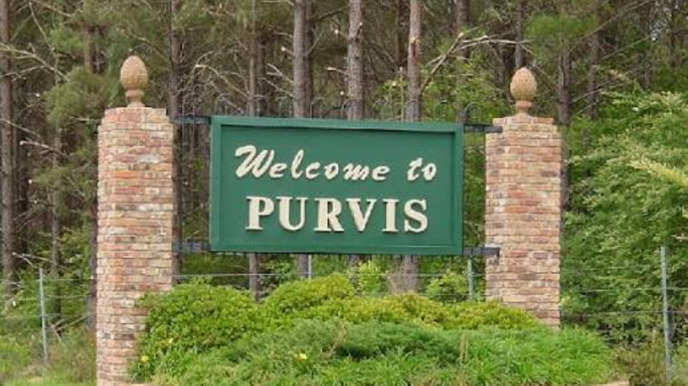

Tile Installation in Purvis, MS
Purvis, the Lamar County seat just southwest of Hattiesburg, blends small-town charm with steady growth along Old Highway 11. We install tile in every room, for every kind of Purvis home.
Tile Work for Purvis's Ranch Homes and Growing Subdivisions
Purvis's housing stock leans toward single-story ranch homes on larger lots, with newer subdivisions filling in along the Lamar County school district's growth corridor. That mix of older ranch construction and newer builds means we see everything from full bathroom gut renovations to backsplash upgrades in recently built kitchens.
As the county seat, Purvis also has a steady base of established homes near downtown where older tile and grout are due for a refresh. Whether your home is decades old or a few years off the lot, we bring the same core services: bathroom, shower, kitchen, floor, and outdoor tile installation.
Why Purvis Homeowners Call Us
Local to Lamar County
We're familiar with Purvis-area homes and the short drive down Old Hwy 11 from Hattiesburg.
Ranch Home Experience
We're comfortable working within the single-story, larger-footprint layouts common in Purvis.
New Construction Ready
We handle backsplash and floor upgrades in Purvis's newer subdivision homes.
Fast, Free Quotes
Call or fill out our form and hear back from us promptly about your Purvis tile project.
Purvis Tile Installation FAQ
Do you serve homes throughout Lamar County, not just Purvis proper?
Yes, we work throughout the greater Purvis and Lamar County area, not just inside the city limits.
Can you work with an older ranch home's original subfloor?
Yes — older ranch homes often need extra subfloor leveling before new tile goes down. We'll assess your specific floor during the quote.
How far is Purvis from your Hattiesburg-based crew?
Purvis sits about 11 miles southwest of Hattiesburg, an easy stop for us as we work throughout the Pine Belt.
Tile Services Available in Purvis
More Pine Belt Service Areas
Ready for Your Purvis Tile Project?
Get a fast, free quote from the crew doing the work.